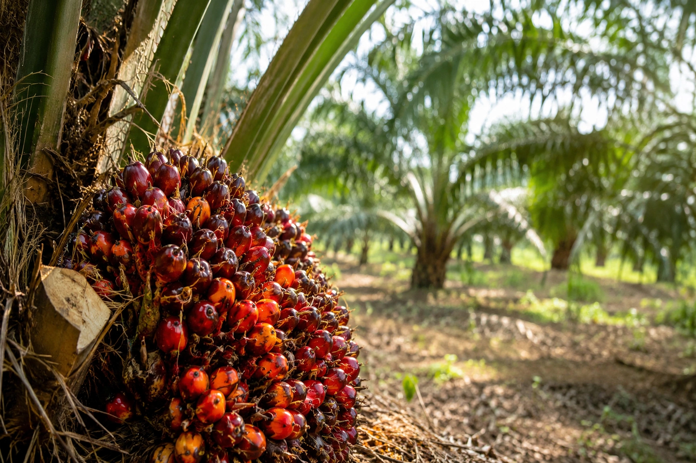

From Wikipedia, the free encyclopedia
| Palm oil | |
|---|---|
 Fresh fruit bunches of the African oil palm (Elaeis guineensis) | |
| Source | Fruit of the oil palms Elaeis guineensis and Elaeis oleifera |
| Main producers | Indonesia (~60% of world supply) and Malaysia (~25%) |
| Global output | ~75–80 million tonnes per year (world's most produced vegetable oil) |
| Products | Crude palm oil (from flesh); palm kernel oil (from seed) |
Palm oil is an edible vegetable oil derived from the mesocarp (reddish pulp) of the fruit of the oil palms. The oil is used in food manufacturing, in beauty products, and as biofuel. Palm oil has been known to cause a multitude of environmental problems due to large-scale deforestation and the burning of peat bogs. The global production of palm oil is dominated by Indonesia and Malaysia, which together account for roughly 85% of the world's supply.
The African oil palm yields far more oil per hectare than any other major oil crop — several times the yield of rapeseed or sunflower — which makes palm oil cheap and ubiquitous. Fresh fruit bunches are sterilised, threshed and pressed within a day of harvest; the crude oil is naturally red from carotenoids and is refined, bleached and deodorised for most food uses. About half of all packaged products in a typical supermarket — from biscuits, margarine and instant noodles to lipstick, shampoo and detergents — contain palm oil or its derivatives. A separate oil, palm kernel oil, is extracted from the seed.
Expansion of plantations in Southeast Asia has driven large-scale deforestation and peatland drainage, releasing major greenhouse-gas emissions and threatening species such as the orangutan, Sumatran tiger and pygmy elephant; haze from land-clearing fires has repeatedly blanketed the region. Labour abuses, including child labour and poor conditions for migrant workers, have also been documented. The Roundtable on Sustainable Palm Oil (RSPO, founded 2004) certifies a minority of global supply as sustainably produced, though critics question its enforcement. Defenders of the industry note palm oil's unmatched land efficiency and its importance to rural livelihoods in producing countries.
Palm oil is about 50% saturated fat, chiefly palmitic acid, which raises LDL cholesterol relative to unsaturated oils, though it contains no trans fats and is a source of vitamin E tocotrienols; unrefined red palm oil is rich in vitamin A precursors.
See also: Deforestation · Orangutan · Biofuel